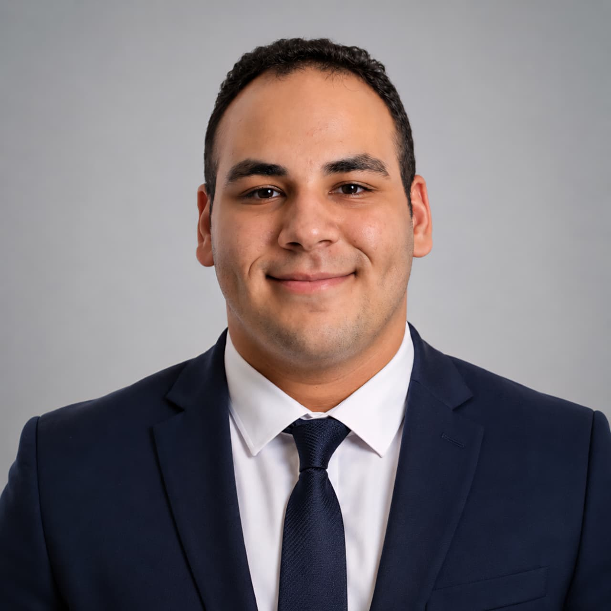

◫
Flutter App Development
Building cross-platform mobile application interfaces and functionality using Flutter and Dart.
Hi, I'm
Computer Science student focused on building practical, responsive and maintainable mobile applications with Flutter & Dart.

I'm a Computer Science student and Cross-Platform Mobile App Developer based in Egypt. I focus on Flutter, Dart, Object-Oriented Programming, SQL and practical software development. I also build and maintain web experiences and create polished digital content using productivity and design tools.
Through DEPI and ITI training, I'm developing practical mobile applications while strengthening my skills in UI implementation, application logic, debugging, architecture and reusable code.
Let's work togetherTechnologies and software-development concepts I use and continue to develop.
Development services aligned with my current Flutter and software-development skill set.
Building cross-platform mobile application interfaces and functionality using Flutter and Dart.
Implementing clean, responsive mobile interfaces with reusable Flutter components.
Structuring application logic using classes, objects, inheritance, encapsulation and reusable code.
Working with SQL fundamentals, database design and local data storage for application projects.
Finding and resolving application issues while improving code organization and maintainability.
Building clean, responsive business websites and improving content structure, presentation and user experience.
Creating and formatting professional documents, presentations and visual content using Microsoft Office tools and Canva.
Developing practical cross-platform applications with Flutter and Dart while applying OOP, reusable code structures, UI development, application logic and debugging workflows.
Building practical mobile application features and developing skills in Flutter application architecture, user-interface implementation and programming fundamentals.
An OOP project for managing books, users and core library operations, structured using classes, objects, inheritance and encapsulation.
Analyzed and designed a multi-branch reservation system aimed at reducing duplicate ticket bookings through centralized reservation management.
A live corporate website for MISR Company, presenting its packaging solutions, 4-layer Co-Ex technology, manufacturing process, quality information and product range in a clear business-focused experience.
Visit Live Website ↗I’m continuously building practical Flutter and web projects through training and personal development.
El Shorouk Academy · Cairo, Egypt
Relevant coursework: OOP, Data Structures & Algorithms, Software Engineering, System Analysis & Design, Database Fundamentals, Operating Systems and Computer Networks.
I'm interested in opportunities where I can apply and grow my Flutter and mobile development skills while contributing to real-world software projects.